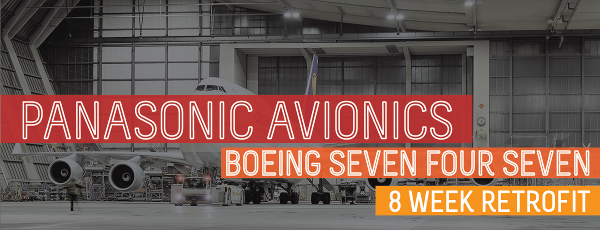
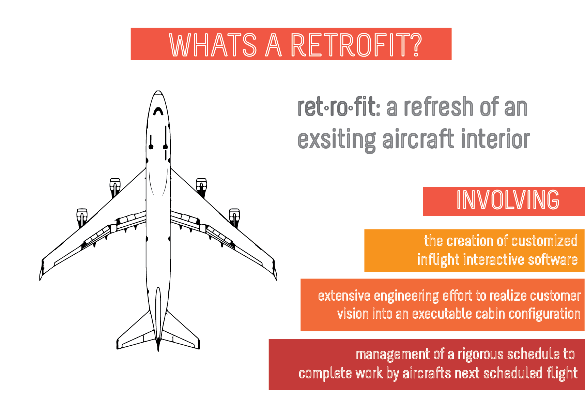

Introduction
- In Program Management department at Panasonic Avionics, I work with global airlines and their partners to deliver in-flight entertainment systems from the moment they are sold to installation well into passenger service.
- Together with a Program Manager, I oversee the entirety of the program, collaborating with internal, customer and third party groups to ensure on-time and quality program delivery.
- The program management effort for these multi-million dollar programs ranges from procurement of parts, certification, and software delivery.
- Below I will detail the effort, challenges, and results of one Boeing 747 program to further illustrate my role and lessons learned.

Program Context
- This retrofit involved a near complete overhaul of a Boeing 747-400 aircraft, which consists of over four hundred seats in three passenger classes, all completed at a maintenance and operations facility in China. Adding to the complexity of this project, the customer requested to reuse some inflight entertainment for a select class of seats. The entire project was completed in a compressed timeframe, nearly half the normal allotted time from sale to delivery. This "short flow" necessitated high degree of cross functional coordination between our project management team and manufacturing, engineering, software and installation groups.

- During this project, and at any given moment, I work on the management of at least 15 to 20 programs for multiple European airlines, all at various stages of completion. During my time in program management, I have contributed to more than twenty-four programs, nearing thousand hours of project management experience. As a Program Administrator, I work daily with a Program Manager to oversee each component of a program.

Challenges
-
Working with my Program Manager while they were at the retrofit location in China, was a significant challenge. Often times, I received critical information on a “one day” delay. Critical information was delayed by "one day" by the time I received the action and began work we were already behind by one working day. This time delay was further compounded the almost twenty-hour days, six-day a week schedule by which most retrofits are conducted.
-
For most Retrofits, engineering work is done based on existing drawing and documentation. A few times during installation, a cable was found to be too short or a part was not created quite to specification. Recreating or procuring a part that takes months to manufacture is no easy feat. Lastly, this was my first Panasonic Program, I did not have the experience that would help in a short flow retrofit like this one.
Lessons Learned
- Interdisciplinary Experience: For this project, I was fortunate enough to work with an experienced program manager who had functional experience in engineering. Which allowed him to effectively communicate onsite issues and assist in their resolution. Demonstrating the importance of cross functional experience on a project team.
- How Others Work: During this project I realized the importance of learning how others work. By this I mean not only the individual habits of the team, but learning how a supplier manufactures seats or what the dynamics of software development are. This type of understand can help prioritize your efforts and answers questions like:
- Can I leave this team relatively unattended to complete their work?
- Do we have to build more time into the schedule considering past overruns?
- Listening: At the start of this program I had almost no experience with aviation program management, I was able to contribute and learn quickly by listening carefully and contributing only once I was able to speak with some authority regarding the on goings of the program.
Final Result
- Ultimately the program was delivered on-time, even with the constraints we faced, the customer was satisfied with this result. This aircraft continues to fly from Europe all around the world. Our program team followed this program with retrofits of eight additional aircrafts.